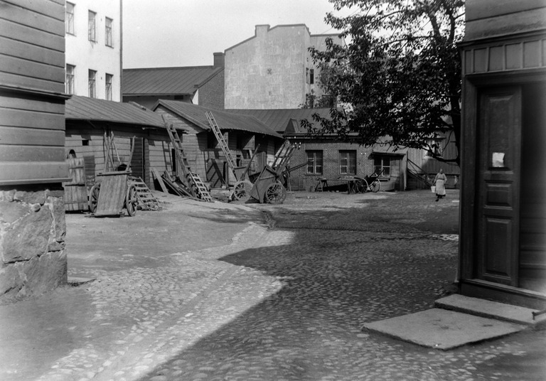
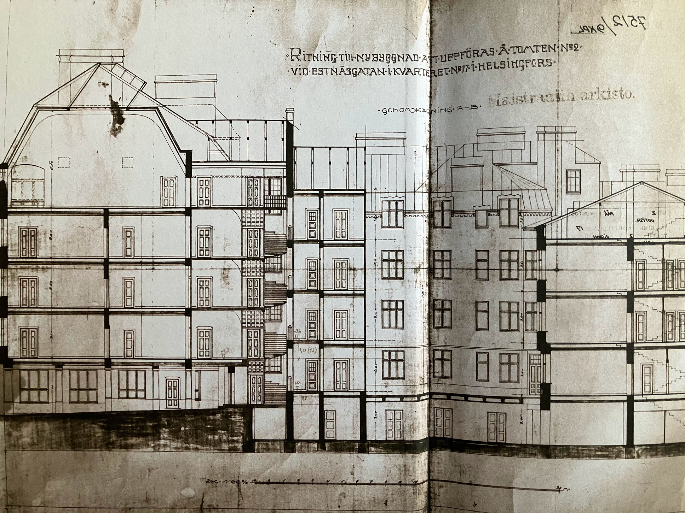
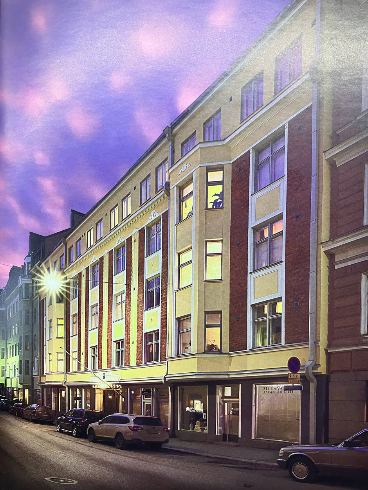
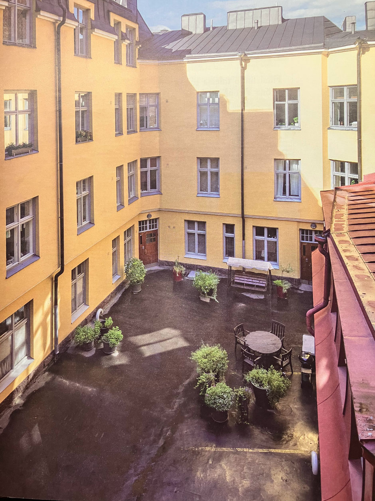

Historiaa
Talon historiaa ensimmäisiltä vuosikymmeniltä 1916 - 1930
Alunperin Vironkatu 9 kohdalla oli matalia puutaloja (kts. kuva). Puutalojen tilalle alettiin rakentaan uutta taloa nimella Asunto Osakeyhtiö Sopusointu vuonna 1915. Valmistuneeseen taloon muuttivat ensimmäiset asukkaat kesäkuussa 1916. Suomi oli vielä tuolloin autonominen osa Venäjän keisarikuntaa.
Talon ensimmäisinä vuosina taloon muutti henkikirjojen mukaan yhteensä 86 asukasta (26 perhettä). Suurimmissa talouksissa asui taloudenhoitaja ja piikoja, näitä talouksia oli talossa kymmenen. Perheiden määrän kasvettua myös lapsimäärä kasvoi talossa peräti 56 lapseen.
Talo-osakeyhtiön ensimmäisenä isännöitsijänä toimi rakennusmestari Kalle Mykkänen ja ensimmäisenä talonmiehenä Anders Wilhelm Bäckman (s. 1865).
Talon asukkaista
Talossa on kautta aikain asunut monenlaista väkeä. Taloyhtiö teetti 100-vuotis juhliin historiikin jossa tutkittiin mm. talon asukasluetteloita vuodesta 1933 lähtien. Posti-, pankki-ja rautatievirkailijoiden ohella talossa on asunut mm. rakennusmestareita, liikemiehiä, toimitusjohtajia, professoreja, tutkijoita, näyttelijöitä, maalareita, ulkotyöläisiä, armeijan palveluksessa olevia aliupseereja, konelatojia, opettajia, juristeja, lääkäreitä, insinöörejä, tullivirkailijoita, partureita, räätäli, valaja, kahvilan pitäjä, puhelimen asentaja, kirvesmiehiä, konemestareita, myyjiä, vakuutusvirkailija, vankilan tarkastaja, keittäjiä, hieroja, tarjoilija, mekaanikkoja ja merikapteeni sekä lukuisa joukko palvelijoita ja kotiapulaisia. Talossa on asunut myös aatelistoon kuuluvia perheitä.
Ehkä kuuluisin talon asukas oli Edwin Linkomies (1894 Viipuri – 8. syyskuuta 1963 Helsinki). Linkomies oli Helsingin yliopiston Rooman kirjallisuuden professori, rehtori ja kansleri sekä suomalainen poliitikko, joka kohosi pääministeriksi vuonna 1943. Linkomiehen vaikutus sekä suomalaiseen tiedepolitiikkaan että valtakunnanpolitiikkaan on ollut merkittävä.
Nykyinen talonväki on pysynyt edelleen monipuolisena. Talossa asuu niin lapsiperheitä, nuoria aikuisia kuin iäkkäämpiä asukkaita. Talossa asuu nykyisellään yhteensä hieman yli 100 asukasta.
Arkkitehtuurista
Talon julkisivu on pohjakerroksen päällä olevan kolmen kerroksen osalta jakautunut neljän ikkunan muodostamaan riviin, joka antaa julkisivulle klassista ylväyttä. Näitä ikkunarivejä reunustavat molemmin puolin teräväkulmaiset erkkeriosat. Nämä erkkerit on rakennettu pohjakerroksen päällä olevan konsolin päälle, mikä samalla on julkisivun koriste-elementti. Tällaiset monen kerroksen läpi kulkevat teräväkulmaiset erkkerit olivat tyypillisiä 1910-luvulla vallalla olleelle kansallisromanttiselle rakennustyylille.
Näiden erkkereiden toisella puolella, talon julkisivun molemmilla reunoilla, on vielä yksi ikkunarivi. Näin talon julkisivua hallitsee selkeästi sen keskusta, jota seikkaa korostaa vielä ikkunoiden välissä olevat pystysuorat koristelistat. Näissä koristelistoissa kansallisromantiikan suosima tumma punaruskea tiiliskivi on suurelta osin päästetty näkyville. Nämä keskellä olevat koristelistat ovat suurempia kuin reunoilla olevat ja vain niiden keskellä kulkee keltainen nauha. Muilta osin julkisivu on maalattu vaaleankeltaiseksi, joka oli jugendin suosima väri. Julkisivusta tosin puuttuvat jugendille tyypilliset kasvi ornamentit.
Pohjakerroksen sokkeli on sileää luonnonkiveä, joka oli tyypillistä 1910-luvun kansallisromanttiselle rakennustyylille. Talon rakennustyyliä on kutsuttu myös myöhäisjugendiksi, mikä nimitys ei tee täysin oikeutta merkittäville eroille talon kohdalla verrattuna jugendiin. Jotain kuitenkin on selkeästi lainattu jugend-tyylistä: Portti on holvimainen ja sen seinustalla on jugendin suosimia kasviornamentteja. Julkisivun kokonaisvaikutelma on siis selvästi koristeellisesta jugendista kohti klassisia suoria ja symmetrisiä linjoja.
 Kruununhaka
Kruununhaka (ruots. Kronohagen) on kaupunginosa Helsingin keskustassa ja samalla Vironniemen peruspiirin osa-alue. Asukkaita siellä on noin 7 200 (1.1.2014) ja työpaikkoja 7 100 (31.12.2012). Sen rajana on lännessä Unioninkatu ja etelässä Kauppatorin reunaa pitkin kulkeva Pohjoisesplanadin osa, muilla suunnilla sitä rajoittavat vesialueet. Kruununhaan nimi tulee nykyisen Rauhankadun seutuvilla aikoinaan sijainneesta kruunun tykistön hevosten laidunmaasta. Se oli vielä 1700-luvun alussa hieman varsinaisen kaupunkialueen ulkopuolella, mutta nykyisin Kruununhakaan luetaan kuuluvaksi myös melkein koko Helsingin senaikainen kaupunkialue.
Keskeinen osa Kruununhaassa on empiretyylillä rakennettu Senaatintorin ympäristö sekä Pohjois-Esplanadin ja Aleksanterinkadun välinen alue. Kruununhaka (lempinimeltään Krunikka tai Kruna) on arvokkaiden instituutioiden kaupunginosa; siellä sijaitsevat muun muassa tuomiokirkko, Presidentinlinna, Valtioneuvoston linna, raatihuone, kaupungintalo, Suomen Pankki, Säätytalo, Ritarihuone, useat maineikkaat asianajotoimistot ja useat Helsingin yliopiston laitokset. Suomen tunnetuimpiin lukioihin kuuluva Sibelius-lukio sijaitsee Liisankadulla. Itärannalla on Pohjoissatama. Pohjoissatamassa sijaitsee pieni puistosaari nimeltä Tervasaari. (Lähde: Wikipedia)